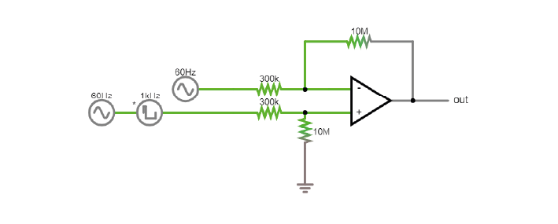
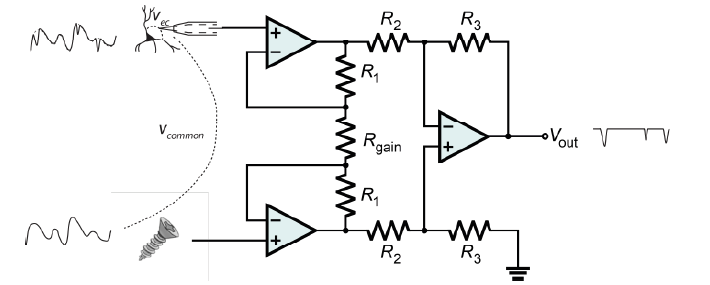
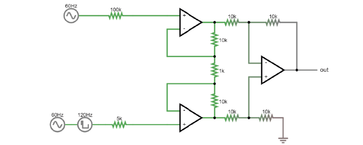
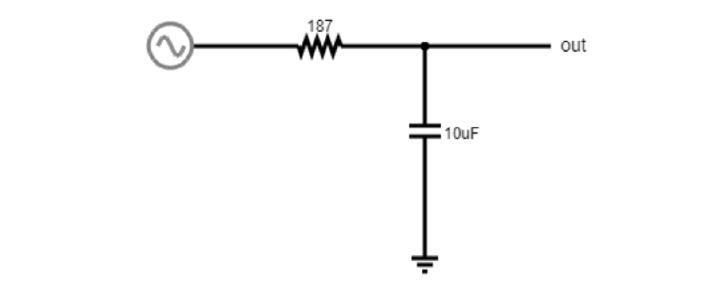
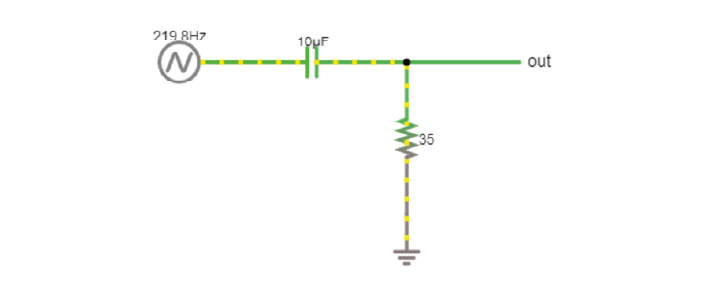

Teori Hari 3#
Sebuah sistem akuisisi harus:
Mendeteksi perubahan perbedaan potensial listrik
Mentransfer sinyal ini secara akurat ke keluaran sistem akuisisi
Membedakan sinyal biologis yang penting dari sumber gangguan listrik lainnya
Penguat diferensial menghilangkan noise bersama#
Referensi#
Kita hidup di dunia yang (secara listrik) sangat bising. Untuk mengurangi sebagian gangguan ini dari perekaman kita, kita dapat menggunakan titik referensi. Titik ini bisa berupa elektroda lain di otak atau sekrup pada tengkorak hewan. Pilihan referensi ini sangat penting untuk perekaman Anda: penguat akan menghasilkan keluaran berupa selisih antara elektroda perekaman dan titik referensi. Artinya, penguat akan berusaha menghilangkan sinyal apa pun yang sama-sama muncul pada keduanya.
Jika elektroda perekaman menangkap noise 50 Hz yang dihasilkan oleh listrik PLN di dinding, Anda ingin penguat menghilangkannya, sehingga sebaiknya menggunakan titik referensi yang juga menangkap noise tersebut. Namun, jika referensi Anda menangkap sinyal yang justru Anda inginkan, maka penguat juga akan menghilangkannya. Oleh karena itu, untuk memilih referensi yang tepat, Anda harus menentukan apa yang dianggap sebagai noise dalam eksperimen Anda.
Penguat Diferensial#
Talk#
Penguatan perbedaan potensial antara elektroda pengukuran dan elektroda referensi (dalam orde mikrovolt) merupakan langkah yang sangat penting. Hal ini dilakukan dengan penguat diferensial yang memperkuat perbedaannya dan menolak noise common-mode (yaitu noise yang identik pada elektroda perekaman dan referensi, biasanya disebabkan oleh artefak gerakan dan kopling kapasitif tubuh serta kabel elektroda dengan medan listrik jaringan listrik (Nunez & Srinivasan, 2009)).
Penguat Instrumentasi#
Talk#
Mengapa kita membutuhkan penguat instrumentasi?#
Mengapa kita tidak bisa menggunakan satu penguat operasional saja untuk mendapatkan sinyal yang baik?

Untuk membuat rangkaian ini menjadi diferensial, kita memerlukan pembagi tegangan. Namun, pembagi ini justru menghubungkan sinyal yang sangat lemah ke ground! Selain itu, ketidaksesuaian impedansi input antara ‘+’ dan ‘-’ akan merusak sinyal jika terdapat banyak noise common-mode.
Dalam praktiknya, selalu ada perbedaan antara resistor-resistor ini; mereka tidak dapat diproduksi dengan nilai yang benar-benar sama.
Mengapa? Karena resistor ini juga merupakan elektroda Anda. Jika Anda bekerja dengan elektroda, apakah Anda pernah mengukur impedansinya? Seberapa mirip nilainya? Jika resistor-resistor ini berbeda sebesar variasi elektroda Anda, rangkaian ini tidak akan mampu menghilangkan noise common-mode dan memperkuat spike kita.
Solusinya adalah menggunakan tiga penguat operasional:
{kind=link}

Berikut tampilannya di simulator: |

Resistor Gain#
Tegangan di kedua sisi resistor gain bersifat tetap karena penguat operasional menjaganya tetap stabil. Jika kita memiliki tegangan yang sama dan nilai RGain lebih kecil, maka arus yang mengalir melalui resistor menjadi lebih besar, dan akibatnya arus melalui resistor umpan balik pada dua penguat buffer juga meningkat.
Resistor-resistor tersebut bernilai tetap: sekarang kita memiliki arus yang lebih besar untuk resistansi yang sama, sehingga terjadi penurunan tegangan yang lebih besar. Kedua penguat buffer harus bekerja lebih keras untuk mengatasi penurunan tegangan ini dan menghasilkan tegangan keluaran yang lebih ekstrem.
Dengan menurunkan nilai RGain, kita pada dasarnya membuat perbedaan antara input ke penguat akhir menjadi lebih besar, sehingga meningkatkan gain dari penguat instrumentasi.
Common Mode Rejection Ratio (CMRR)#
Ketika impedansi input dari penguat diferensial tidak cocok, sebagian sinyal input yang seharusnya sama pada kedua input dan dibatalkan justru muncul pada keluaran.
Cara umum untuk memodelkan seberapa baik sebuah penguat mengurangkan satu input dari input lainnya adalah sebagai berikut: kita mendefinisikan setiap input (+ dan -) sebagai penjumlahan antara tegangan individual (V1 atau V2) dan tegangan yang sama pada keduanya.
Pada lengan kita atau otak hewan, tegangan bersama ini (Vc) dapat berupa noise listrik atau aktivitas otot yang tidak kita inginkan dan ingin kita buang. Dalam hal ini, inputnya adalah:
(Dalam beberapa contoh penguat diferensial, V2 adalah ground 0V, yang merupakan nilai yang sepenuhnya valid).
Dalam penguat diferensial ideal, keluaran seharusnya merupakan selisih dari kedua input yang diperkuat oleh suatu faktor:
Di sini, sinyal bersama yang tidak diinginkan saling menghilangkan dan hanya sinyal yang kita inginkan yang diperkuat.
Namun, penguat nyata berperilaku berbeda. Seperti yang telah kita lihat, ketidaksempurnaan kecil dapat menyebabkan sebagian tegangan bersama ikut diperkuat. Dalam kasus ini, keluaran penguat nyata menjadi:
Selain gain diferensial, muncul istilah baru yaitu ‘Ac’ atau gain bersama, yang memperkuat sinyal yang sama pada kedua input.
Tentu saja, kita menginginkan gain diferensial setinggi mungkin dan gain bersama serendah mungkin (idealnya Ac = 0). Perbandingan antara kedua gain ini menunjukkan seberapa baik penguat hanya memperkuat sinyal diferensial. Ini disebut Common Mode Rejection Ratio (CMRR), yang didefinisikan sebagai:
atau
jika diukur dalam desibel.
Semakin tinggi CMRR, semakin baik penguat dalam menghilangkan sinyal yang sama pada kedua input.
Penguat instrumentasi tidak sepenuhnya kebal terhadap noise input bersama. Mereka adalah rangkaian nyata dan terdapat banyak jalur di mana sinyal bersama dapat bocor ke keluaran. Namun, mereka memiliki CMRR yang sangat tinggi.
Sebagai perbandingan, penguat operasional LM358 memiliki CMRR sebesar 80 dB, sedangkan penguat instrumentasi memiliki CMRR sebesar 120 dB, yaitu 100 kali lebih tinggi! (Terdengar kurang mengesankan? Ingat bahwa desibel bersifat logaritmik; perbedaan antara 80 dan 120 dB dalam hal suara setara dengan perbedaan antara suara toilet disiram dan mesin jet).
Mengapa kita membutuhkan elektroda ground?#
Saat kita membangun rangkaian EMG, kita akan menggunakan tiga elektroda: pengukuran (+), referensi (-), dan ground. Mengapa kita memerlukan elektroda ground (atau pin ground atau sekrup) padahal kita sudah memiliki input ‘+’ dan ‘-’? Ini cukup rumit, dan ada beberapa cara untuk memahaminya.
Bayangkan Anda baru saja berjalan di atas karpet dan tubuh Anda bermuatan hingga 10 kV. Sekarang Anda ingin melakukan pengukuran diferensial EMG (atau EEG). Secara teori, ini seharusnya bekerja berkat penolakan common-mode. Namun, ingat rangkaian di dalam penguat instrumentasi:
Input ‘-’ dari dua penguat input terhubung ke ground melalui sejumlah resistor. Jika tubuh Anda bermuatan 10 kV terhadap ground, kita meminta penguat ini menangani perbedaan tegangan yang sangat besar, dan mereka akan mengalami saturasi.
Ingat rasio penolakan common-mode. Jika penguat kita mampu menolak 99,99% sinyal common-mode, tetapi 0,01% masih lolos, dalam skala volt hal ini masih cukup untuk mencegah kita mendeteksi spike mikrovolt.
Dengan menempelkan elektroda ground ke tubuh dan menghubungkannya ke ground sistem akuisisi, kita membawa tubuh ke 0V dari sudut pandang sistem akuisisi. Noise yang tersisa masih ada, tetapi perbedaan tegangannya jauh lebih kecil.
Masalah terakhir yang terkait adalah bahwa keluaran sistem ini relatif terhadap ground. Pada suatu titik, Anda ingin menghubungkannya ke PC, yang berada pada level ground.
Secara praktis, semua ini berarti kita ingin meng-ground-kan subjek sebaik mungkin.
Satu detail tambahan: ground tidak selalu berarti bumi. Dalam banyak kasus, ground hanyalah rangkaian tertentu yang kita perlakukan sebagai 0 dan mampu menyerap atau menyuplai arus besar.
Low-pass dan High-pass Filtering#
Filter digunakan untuk menghilangkan frekuensi tertentu dari data kita. Filter dapat diterapkan pada perangkat keras maupun perangkat lunak. Biasanya, filtering perangkat keras digunakan untuk meningkatkan rasio sinyal terhadap noise dan mencegah aliasing sinyal.
Oleh karena itu, filter high-pass menghilangkan komponen DC besar dan sinyal frekuensi rendah yang tidak diinginkan, sementara filter low-pass mencegah sinyal frekuensi tinggi melewati batas Nyquist.
Filter low-pass#
Filter ini memblokir frekuensi tinggi. Ini pada dasarnya adalah pembagi tegangan dengan komponen yang bergantung pada frekuensi.

Filter high-pass#
Ini menggunakan prinsip yang sama.

Filter ini disebut filter RC karena dibangun dari resistor (R) dan kapasitor (C). Karena hanya ada satu pasang, filter ini disebut single-pole.